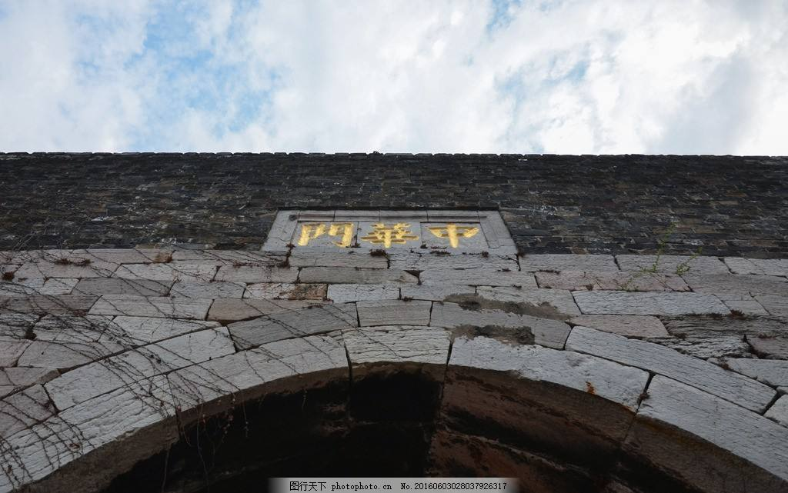

金陵文脉：中华门
2018-12-24

中华门东西宽118.5米，南北长128米，占地面积15,168平方米。共设三道瓮城，由四道券门贯通，首道城门高21.45米。各门均有可以上下启动的千斤闸和双扇木门，现仅存闸槽和门位遗迹。瓮城上下设有藏兵洞13个，左右马道下设藏兵洞14个，可在战时贮备军需物资和埋伏士兵，据估计可容纳三千人。
中华门瓮城东西两侧筑有宽11.5米、长86.1米的马道，马道陡峻壮阔，是战时运送军需物资登城的快道，将领亦可策马直登城头。
中华门设置有三道瓮城、四道券门，主体建筑内瓮城由中华门主楼城门和二至四道辅助城门构成，各城门原有双扇木门和可上下启动的千斤闸，建国后大跃进时期被毁坏；中华门主体建筑两侧建筑有27个藏兵洞，可以同时屯兵3000余人并储藏士兵所需生活物资。
中华门主楼即第一道城门分上、中、下三层，高21.45米。上层原建有庑殿式重檐筒瓦顶的镝楼，镝楼毁于1937年12月初侵华日军进攻南京时的炮火，21世纪仅存台基遗迹；中层为砖石结构，朝内一排设置7个藏兵洞，藏兵洞内设茶室，兼顾经营旅游纪念品；下层结构中间为瓮城甬道，两侧各有3 个藏兵洞。